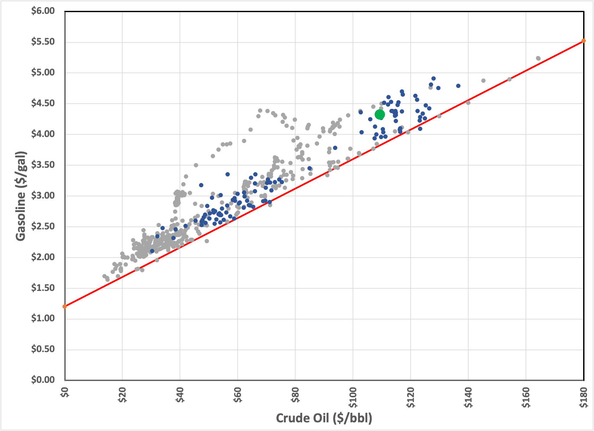
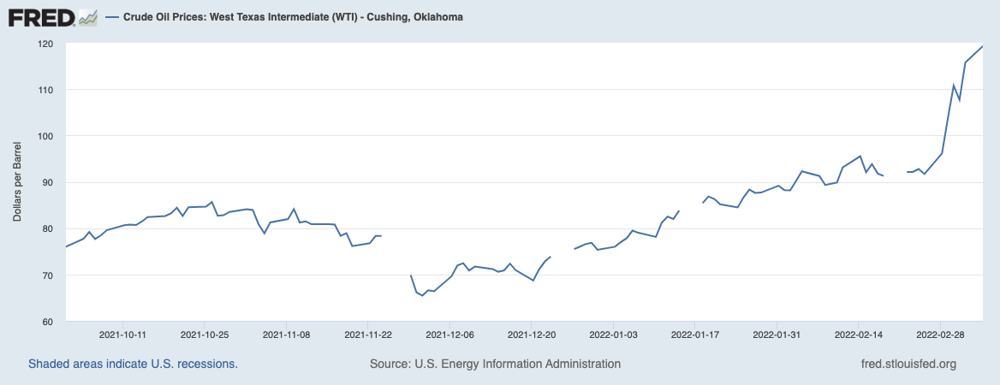
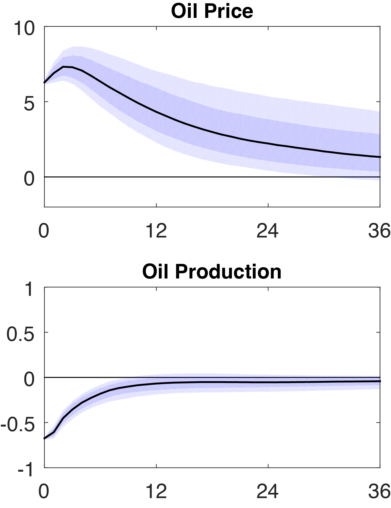

You can read Healing for free, and you can reach me directly by replying to this email. If someone forwarded you this email, they’re asking you to sign up. You can do that below.
If you really want to help spread the word, then pay for the otherwise free subscription. I use any money I collect to increase readership through Facebook and LinkedIn ads.
Thank you for reading Healing the Earth with Technology. This post is public so feel free to share it.
Today’s read: 6 minutes.
I didn’t expect to be ahead of the news cycle with last week’s issue! But, instead of not getting enough coverage, the CNN “Breaking News” banner has been hyping the connection between global energy and the Russian war of aggression in Ukraine. As political winds were beginning to intensify on Tuesday, the Biden administration reversed its position to impose a “ban” on importing Russian oil into the US. In announcing this decision, the President stated the obvious, that “many of our European Allies and partners may not be in a position to join us.”1 He went on to say:
“The decision today is not without cost here at home. Putin’s war is already hurting American families at the gas pump.
Since Putin began his military buildup on Ukrainian borders, just since then, the price of the gas at the pump in America went up 75 cents. And with this action, it’s going to go up further.
I’m going to do everything I can to minimize Putin’s price hike here at home. In coordination with our partners, we’ve already announced that we’re releasing 60 million barrels of oil from our joint oil reserves. Half of that — 30 billion — million — excuse me — is coming from the United States.”
Even President Biden stumbled over the billion-million disjunction. This commonplace error reflects the nearly unimaginable scale of energy. As it turns out, demand is about 100 million barrels of oil per day, so the strategic release will last (drumroll please)—Fifteen (15) hours. Symbolic, but lacking true impact.
As Biden foreshadowed, our European allies are split—Britain committed to banning Russian oil “by the end of the year”. That’s not very useful, since (ahem) Britain is an island, it has few natural petroleum deposits of its own, so it already imports most of its liquid fuel by sea. At the current rate of change, the conflict will probably have been decided when Boris Johnson has to follow through. If we’re not nuclear toast by then, politics will allow him to walk it back if necessary. German Chancellor Olaf Scholz rejected the proposal outright, saying, “At the moment, Europe’s supply of energy for heat generation, mobility, power supply, and industry cannot be secured in any other way. It is therefore of essential importance for the provision of public services and the daily lives of our citizens.” France is playing both sides (of course), deferring their commitment to decisions made by the EU (which won’t act without Germany!).
The question for today is this:
Russia supplies around 16% of the world’s oil. If that abruptly went away, how much would gasoline prices rise?
This question is both politically and economically relevant since (for entirely psychological reasons) humans actually feel “the pain at the pump” and (for quite emotional reasons) blame the President and the party in control for this pain.
To answer this question, let’s return to the historical relationship between oil prices and gasoline prices that I covered earlier:

I realized that I didn’t cite the previous work appropriately, so I’ve corrected that above. Also, more data has appeared since I created the earlier graph more than a decade ago. For continuity, data before 2011 appears in grey. The blue dots indicate data reported since 20112. The green dot represents where we are today—at the high end, but not as painful as the breathless media portrays. The red line empirically estimates the cost of gasoline as a function of the price of crude oil (with points above the line estimating profit margins between the wholesaler and retailer. Its formula is Gasoline = $0.024 (Oil) + $1.20. Thus, when oil is $100/barrel, the price of gasoline can never fall below $3.60/gallon. Various types of instability drive the price up above the line (because of speculation & hoarding, mostly) while demand shocks (like recessions & pandemics) drive the price down to the line, but only rarely below it. The high water mark was in June/July 2008, and prices fell by nearly a factor of four over the subsequent six months because of the “Great Recession”. We can speculate endlessly about cause and effect there.
Yes, I know this is simple (even though it involves math!). There are many factors in play, and it’s an entire executive-level career to understand and explain the energy marketplace. But, by inspection, it’s easy to infer that gasoline prices will be somewhere between $0.25 and $0.50 above the price given by the above formula. Biden’s $0.75 change in gasoline prices translates to about $30 per barrel, which we can check:

So he’s approximately correct, and the relationship holds.
Now to the question-of-the-day: Russia supplies around 16% of the world’s oil. If that abruptly went away, how much would gasoline prices rise? To answer this quantitatively drags us into the economic fog since we need to know the relationship between price and supply when supply is suddenly restricted. This concept in economics is called “elasticity”, a number that changes over time as the marketplace adjusts to new circumstances. Like most quantitative economics, the idea is fuzzy and imprecise. And the only way to predict the future is to model it based on these woefully imprecise numbers.
We’re back to models, dammit, ones even harder to validate than climate models! So what do these models tell us? Here’s what I found:

In this case, this model says that professional economists (at least a few of them) estimate that a production shock of -0.75% leads to a 6% increase in prices, which dissipates over the next 36 months as new supplies come online.3 If Russian oil were not replaced, this model suggests that a 16% drop in supply would lead to an oil price of $296 a barrel and a rock-bottom gasoline price of $8.31/gallon that persists for a year or more. That sounds awful, but the price of petrol in the UK is already $7.72/gallon—of course, they’d see a similar jump, but if fuel prices rose to that level, it would be very painful but not fatal.
That’s well outside the data set used to train the model, so it’s a data-centric shot in the dark. But talk about a potent stimulus for alternative energy! Corn and even cellulosic ethanol become pretty attractive at that price. The same is true for many other methods for producing alternative liquid fuels. Electric vehicles would also become a lot more appealing.
Oh, and to address the Republican talking point, what happens if Biden changes policy to allow oil to flow through the Keystone XL pipeline? Well, nothing. First of all, the pipeline isn’t even built yet, the decision stopped construction. Even if it was built but empty, a pipeline is just one alternative (an inexpensive one) for moving liquids from well to refinery. Building it would make us more dependent on foreign oil, even if the foreign country is Canada.
Forcing its major customers to seek better alternatives is bad for the future of OPEC. I bet that they would adjust their production (without colluding with Russia) to make up a significant amount of the shortfall, probably keeping prices under $200 a barrel. The leaders of Western democracies would praise Riyadh for coming to aid the world’s economy, but it would weaken our economies in favor of oil exporters.
You should decide for yourself, but I think it’d be worth the short-term pain to shut off Russian oil entirely by any means necessary, short of overt attacks. My feeling is that the best alternative to such surgical action involves ratcheting up armed conflict, which rarely ends well.
https://www.whitehouse.gov/briefing-room/speeches-remarks/2022/03/08/remarks-by-president-biden-announcing-u-s-ban-on-imports-of-russian-oil-liquefied-natural-gas-and-coal/
Persnickety readers will note a change in the data from last time. That data was based on 2011 dollars. This graph uses 2022 dollars.
Reading deeper into the paper shows that the authors took an average elasticity among several papers. Instead, if we use the median elasticity, the price increase would be closer to 3%. That translates to a slightly more tolerable level of $6.32/gallon.